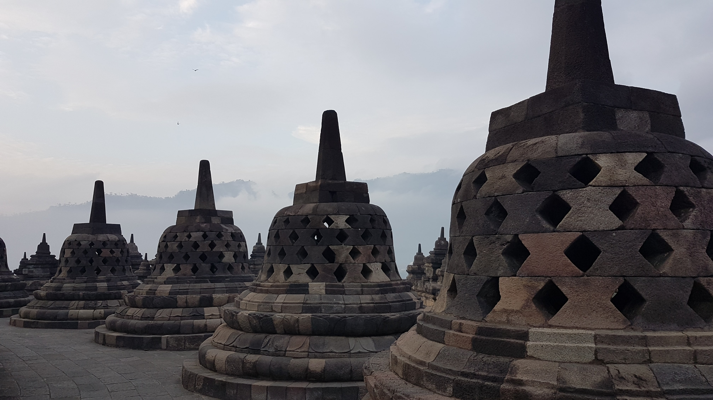

Indonesia is a tropical country situated in South East Asia.
Due to its arcipelago nature consisting of hundreds or
even thousands of islands, the nation boasts various unique and colourful
landscapes. It's a country also rich with culture and history.
I travelled across this country back in 2018 and took dozens of photoes,
which I am sharing right here in this website.
I hope you enjoy these photos as much I enjoy taking them!
Yoghakarta
Borobudur Temple
One of the many well-crafted and detailed murals you will find
on the walls of the temple.
Borobudur Temple
What the Borobudur Temple most famous for. Its stupas!

Borobudur Temple
The full view of the Borobudur Temple from the ground.
Jomblang Cave
Once you arrive at the end of the cave, you are greeted with a
scenic window of the outside world, where the sun's rays
penetrate through the cave ceiling.
Jomblang Cave
On the way to the cave ceiling, there's a small stream of fresh water next to you.
Taman Sari Water Castle
A historic sife that used to house a royal garden of the Sultanate of Yogyakarta.
Prambanan
A view from the ground of one of the temples in Prambanan.
Bali
Offerings
The Balinese are highly religious people. They are one of
the few remaining Indonesians that maintains their Hindu beliefs over the
Muslim majority. This captures the early hours of one morning as the locals
prepare to pray and offer flowers and gifts to their Gods.
Tegallalang, Ubud
Agriculture is one of Bali's primary industries. Rice will
be the locals' primary source of food.
Tanah Lot
One of the many and more well-known temples in Bali.
Only locals are allowed to enter for the sole purpose to worship.
Hence, tourists generally spend time in the surrounding beach area
and enjoy the sunset.
Mount Batur
One of the many active volcanoes in Indonesia. This make the island
fertile and rich for farming.